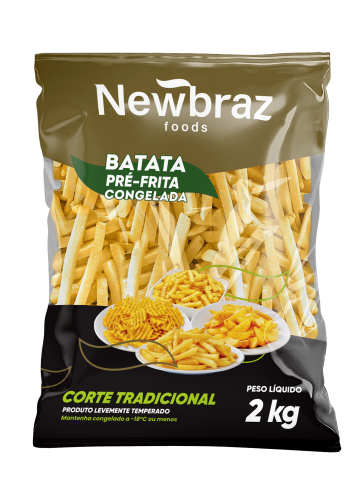

Batata Tradicional 10mm

Peso: 2 kg
Descrição: Batatas pré-fritas congeladas em corte tradicional (10mm). O clássico que nunca sai de moda, perfeito para qualquer estabelecimento que busca qualidade e tradição.
Preparação: Fritar diretamente congelado em óleo a 180°C por 3-5 minutos ou até chegar ao ponto desejado.
Diferenciais: Corte padrão que garante cocção uniforme, crocância perfeita, sem adição de temperos para versatilidade de uso.
Solicitar Orçamento